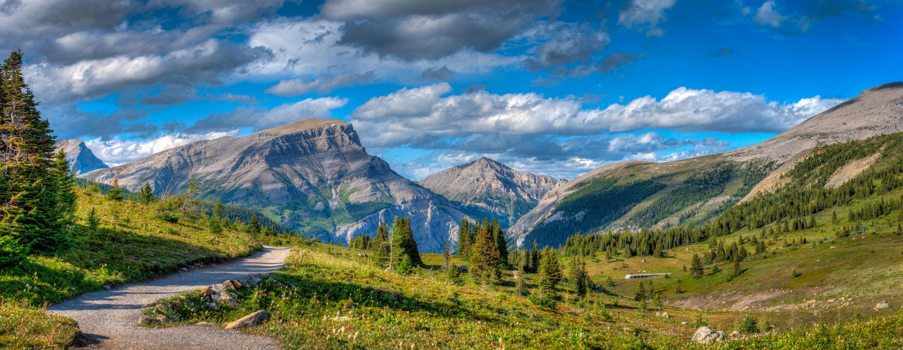

← Sunshine Meadows
🥾 Citadel Pass
Sunshine Meadows
⭐ Sunshine Meadows에서 가장 긴 거리의 장거리 트레킹 코스

📅 우리 일정
Day 5 오후 (상급자 추천 코스)
🏞 기대 풍경
⛰ 드넓게 펼쳐진 Citadel Pass 능선
🌼 끝없이 이어지는 고산 초원
🏔 로키 산맥의 웅장한 파노라마
🌲 사람의 손길이 적은 자연 풍경
📸 장거리 트레킹에서만 만날 수 있는 최고의 전망
📏 기본 정보
🚶 걷는 거리
왕복 약 13km
⏱ 걷는 시간
약 5~6시간
💪 난이도
어려움
📈 고도차
약 420m
🚻 편의시설
✔ Sunshine Village 주차장
✔ 곤돌라 및 Standish Chairlift 이용
✔ 화장실 (베이스 및 상부)
✔ 카페 및 레스토랑
✖ 트레일 중간 편의시설 없음
🎒 준비물
🥾 트레킹화 (필수)
💧 물 1.5~2L
🍫 간식 및 점심
🧥 방풍 자켓 또는 바람막이
🧴 선크림, 선글라스, 모자
🩹 간단한 구급용품
💡 여행 Tip
✔ Sunshine Meadows에서 가장 긴 코스로 충분한 체력과 시간을 확보한 후 출발하세요.
✔ Rock Isle Lake와 Standish Viewpoint보다 이용객이 적어 한적한 로키의 자연을 느낄 수 있습니다.
✔ 기상 변화가 빠른 고산 지형이므로 방풍 자켓과 충분한 물을 준비하세요.
✔ 장거리 코스인 만큼 중간에 휴식을 취하며 체력을 안배하는 것이 좋습니다.
✔ 가족 여행이라면 Rock Isle Lake나 Standish Viewpoint 코스를 우선 추천하며, Citadel Pass는 체력에 자신 있는 경우에 선택하세요.
← Sunshine Meadows